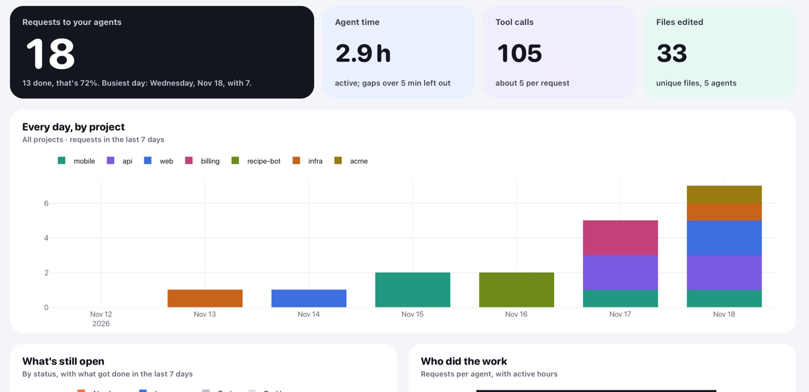

Видно, какой агент ждёт вас
Needs you собирает все сессии, которые остановились на вопросе или запросе разрешения, какой бы агент их ни вёл: сам вопрос и кнопка Resume.

Pitwall превращает каждый запрос к агентам в тикет рядом с задачами по проектам и сразу показывает, когда агент ждёт вашего ответа.

$ curl -fsSL https://aidarkazybekov.github.io/pitwall/install.sh | bash
Проверяет загрузку, ставит приложение в «Программы» и открывает его без окна безопасности. Запустите ещё раз, чтобы обновить. Посмотреть скрипт.
Живая копия демо-доски. Перетащите карточку в другую колонку, откройте её, чтобы увидеть план агента, и посмотрите, как Codex останавливается, чтобы задать вам вопрос.
Это настоящее приложение, только без ваших проектов.
Скачать для MacУкажите этой странице папку Claude Code. Она прочитает транскрипты прямо во вкладке и покажет, что Pitwall вынесет на вашу доску. Сервера нет: ничего не загружается и не сохраняется. (Приложение читает ещё Codex, Cursor, Gemini CLI и Antigravity; эта страница считает Claude Code.)
~/.claude/projects и нажмите Return.Откройте эту страницу на Mac, где вы работаете с Claude Code, чтобы увидеть свои цифры.
Скачать для MacЗдесь появятся ваши цифрыЗапросы, сессии, проекты, лучшая серия дней и сессии, где Claude всё ещё ждёт вашего ответа.
Посчитано по правилам приложения. Приложение ещё читает историю запросов Claude Code и других агентов, поэтому находит больше. «Скопировать мои цифры» не включает названия проектов.
Needs you собирает все сессии, которые остановились на вопросе или запросе разрешения, какой бы агент их ни вёл: сам вопрос и кнопка Resume.
Свой бэклог для каждого приложения. Передайте задачу любому агенту через Start with или упомяните в промпте ключ вроде T-004, и сессия привяжется к задаче.

Обычный markdown: его читают и команда, и агенты. Совместимо с Backlog.md.
--- id: T-004 title: Checkout redesign priority: P1 status: in-progress ---
Что вы просили и что сделано, по дням, с активным временем каждого агента.

Запросы по дням и проектам, какой агент сделал работу и когда в неделе вы работаете с ними.

Вставьте однострочник в Терминал. Или скачайте zip и один раз разрешите запуск в Системных настройках.
Укажите, где лежит ваш код, например ~/Developer. Каждый git-репозиторий станет проектом.
Пользуйтесь агентами как всегда. Доска сама обновляется каждые 20 секунд.
Нет. Оно читает ~/.claude, ~/.codex, ~/.gemini и базу чатов Cursor, только на чтение. Пишет лишь в свою папку и, когда вы правите задачу, в её markdown-файл.
Нет. Ни аккаунта, ни сервера, ни аналитики. Приложение не делает сетевых запросов.
macOS 15 или новее на Apple Silicon и хотя бы один агент: Claude Code (CLI или десктопное приложение), Codex, Cursor, Gemini CLI или Antigravity. На Mac с Intel можно собрать из исходников.
Приложение пока не нотаризовано. Установщик в одну строку обходит это окно. Если вы скачали zip, откройте приложение один раз, затем зайдите в Системные настройки, раздел «Конфиденциальность и безопасность», и нажмите «Всё равно открыть». В macOS 15 убрали старый способ через правый клик.
Да. Храните задачи в папке backlog/ в репозитории. Все видят одни и те же markdown-файлы через git, и ваши агенты тоже.
Да. Его переименовали, когда он научился читать всех агентов, а не только Claude. Если поставить Pitwall поверх ClaudeBoard, задачи и настройки сохранятся.
Да. Откройте меню Help и выберите Try the Demo Board. Демо работает на выдуманной компании и не трогает ваши файлы.
Бесплатно, с открытым кодом, и всё остаётся на вашем Mac. Идеи и pull request'ы приветствуются.